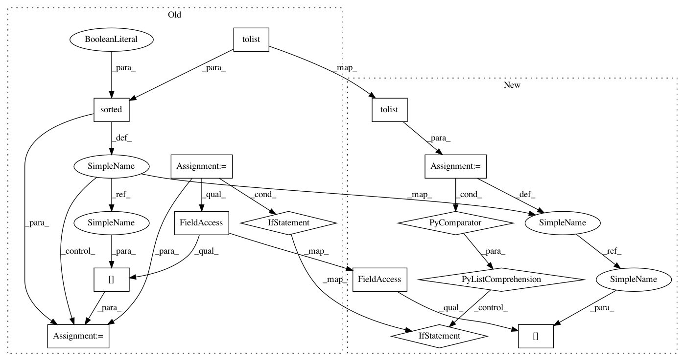

7877691fdca200bfd318614da06adfe2b9196b29,src/graph_transpiler/webdnn/frontend/tensorflow/ops/gen_math_ops.py,,prod_handler,#Any#Any#,476
Before Change
def prod_handler(converter: TensorFlowConverter, tf_op: "tf.Operation"):
x = converter.get_variable(tf_op.inputs[0])
axis = converter.get_variable(tf_op.inputs[1])
v = x
assert isinstance(axis, ConstantVariable), "[TensorFlowConverter] Operation "Prod" with dynamic axis is not supported yet."
for i_axis in sorted(axis.data.astype(int).flatten().tolist(), reverse=True):
axis = v.order.axes[i_axis]
v, = Prod(None, axis=axis)(v)
if not tf_op.get_attr("keep_dims") and v.ndim > 1:
v = v.squeeze(axis)
converter.set_variable(tf_op.outputs[0], v)
@TensorFlowConverter.register_handler("QuantizeDownAndShrinkRange")
After Change
axis = converter.get_variable(tf_op.inputs[1])
assert isinstance(axis, ConstantVariable), "[TensorFlowConverter] Operation "Prod" with dynamic axis is not supported yet."
for axis in [x.order.axes[i] for i in axis.data.astype(int).flatten().tolist()]:
x, = Prod(None, axis=axis)(x)
if not tf_op.get_attr("keep_dims") and x.ndim > 1:
x = x.squeeze(axis)
converter.set_variable(tf_op.outputs[0], x)
@TensorFlowConverter.register_handler("QuantizeDownAndShrinkRange")
In pattern: SUPERPATTERN
Frequency: 4
Non-data size: 14
Instances
Project Name: mil-tokyo/webdnn
Commit Name: 7877691fdca200bfd318614da06adfe2b9196b29
Time: 2017-11-30
Author: y.kikura@gmail.com
File Name: src/graph_transpiler/webdnn/frontend/tensorflow/ops/gen_math_ops.py
Class Name:
Method Name: prod_handler
Project Name: mil-tokyo/webdnn
Commit Name: 7877691fdca200bfd318614da06adfe2b9196b29
Time: 2017-11-30
Author: y.kikura@gmail.com
File Name: src/graph_transpiler/webdnn/frontend/tensorflow/ops/gen_math_ops.py
Class Name:
Method Name: sum_handler
Project Name: mil-tokyo/webdnn
Commit Name: 7877691fdca200bfd318614da06adfe2b9196b29
Time: 2017-11-30
Author: y.kikura@gmail.com
File Name: src/graph_transpiler/webdnn/frontend/tensorflow/ops/gen_math_ops.py
Class Name:
Method Name: min_handler
Project Name: mil-tokyo/webdnn
Commit Name: 7877691fdca200bfd318614da06adfe2b9196b29
Time: 2017-11-30
Author: y.kikura@gmail.com
File Name: src/graph_transpiler/webdnn/frontend/tensorflow/ops/gen_math_ops.py
Class Name:
Method Name: max_handler